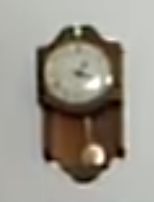
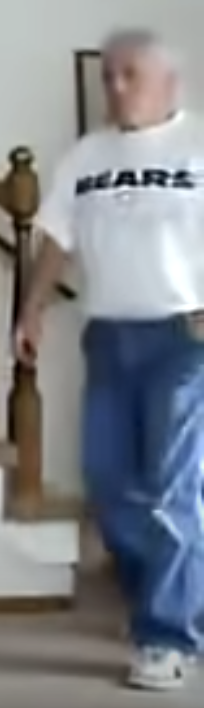
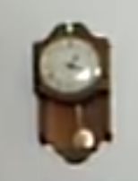
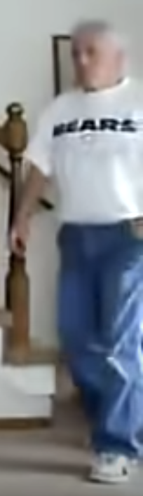
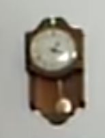
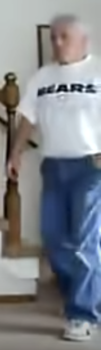

This video was published on YouTube October 9, 2010
The clock in the background sits at about 1:20pm and two people in the video are in Chicago Bears shirts.


I wondered if, given the appaerel and the time on the clock, this video was filmed on October 3rd, 2010. That was the last time the Chicago Bears played before this video was uploaded.
The game beofore the October 3rd game was played September 27th. This would have been the last Bears game the Boy's in this video would have seen. The Bears won this game. It made me think that the boys in the video might have tackled the camera to possibly mimick the tackles of their heroes on the field.
Although The Bears won on September 27th, they lost on October 3rd, the day the "Here I come I am Cinnamon" video was filmed.
I wondered if the boys in the video had eaten some Apple Jacks cereal before it was filmed. The sugar mixed with the excitment of The Bears potentially winnig again may have caused the perfect storm for this videos creation.
The Bears not only lost on October 3rd, they also had significantly less tackles than the Giants.
After crashing from the sugar and being let down by their heros, I predict that the boys were detered from making anymore content. No Video had been uploaded onto the boys channel until... April 29th, 2023.
This new video isn't a nod to JakeTripplJ's origianl cult viral hit. It's the start of a new era.
Just like JakeTripplJ, Kellogs has moved on as well. Earlier this year they started phasing out their original mascots. Love it or hate it, the world changes.
 


